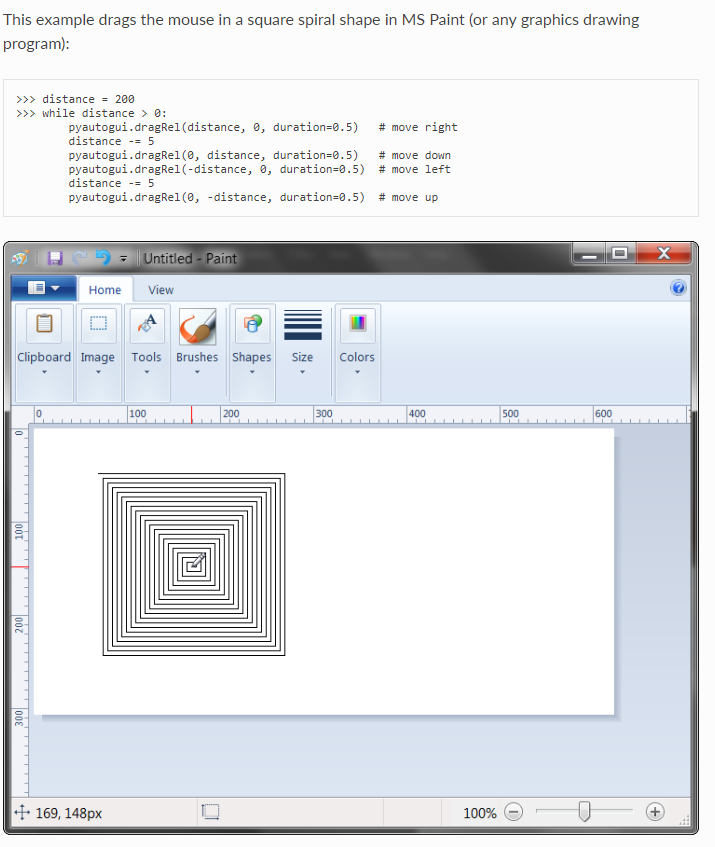

Graphical User Interface (GUI) Automation Using Python

CST-336 Internet Programming 2018© De La Costa
Disclaimer: The information in this webpage is fictitious.
It is used for academic purposes only.